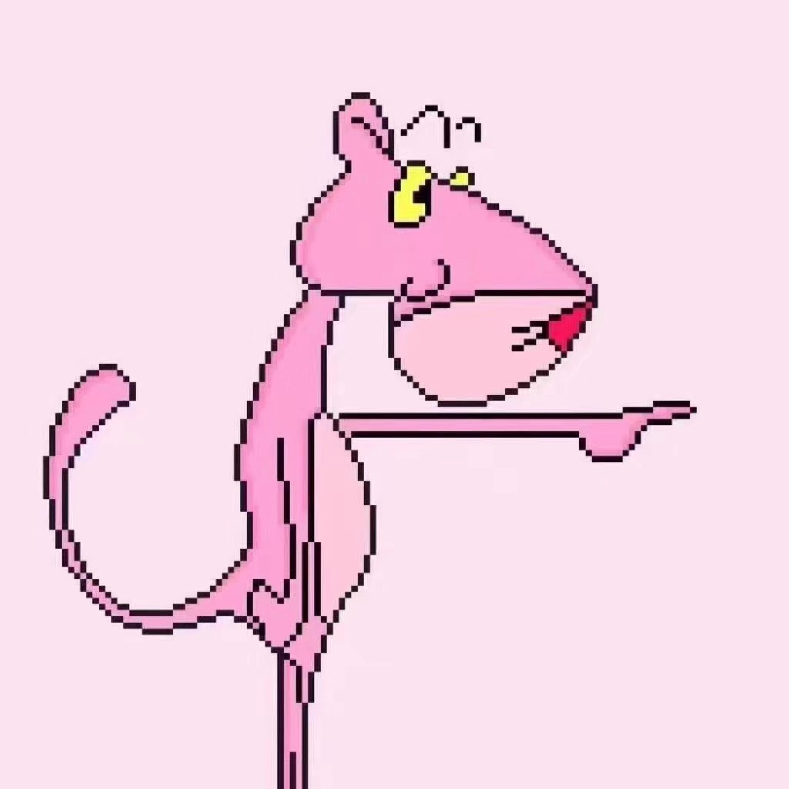
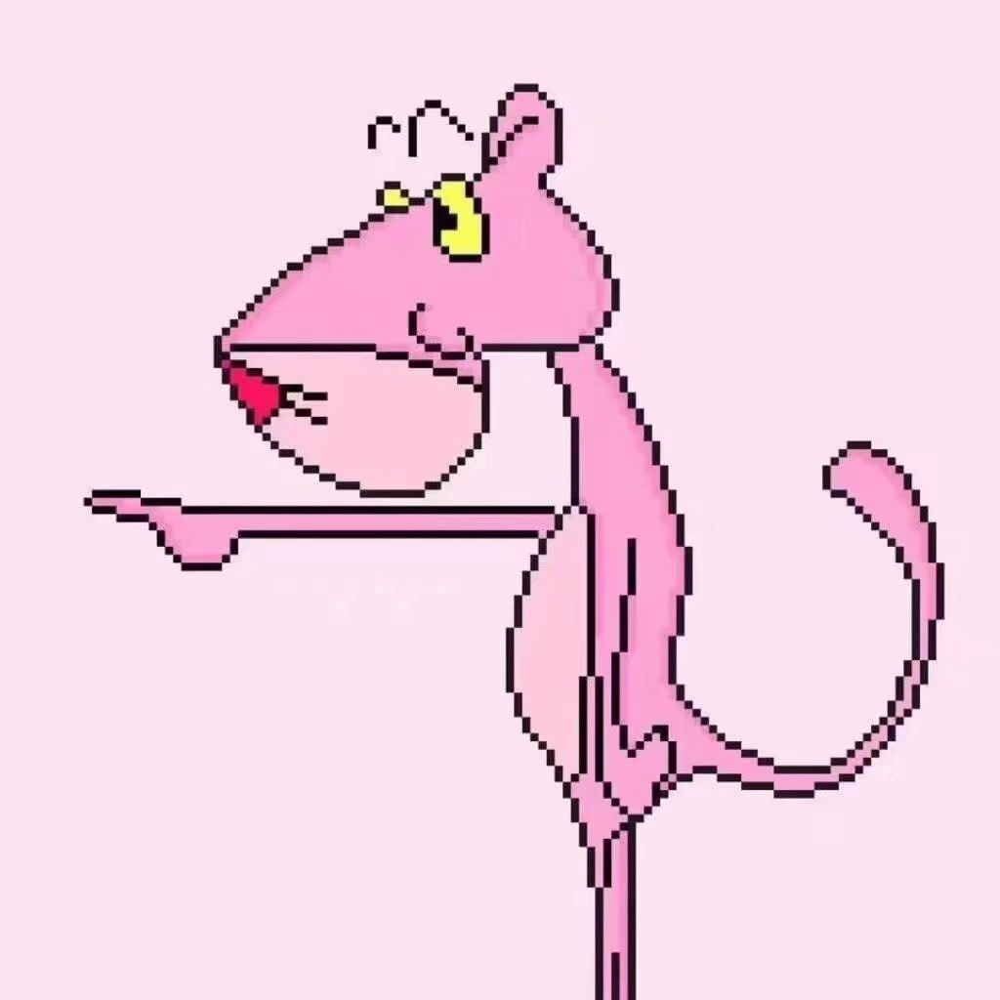
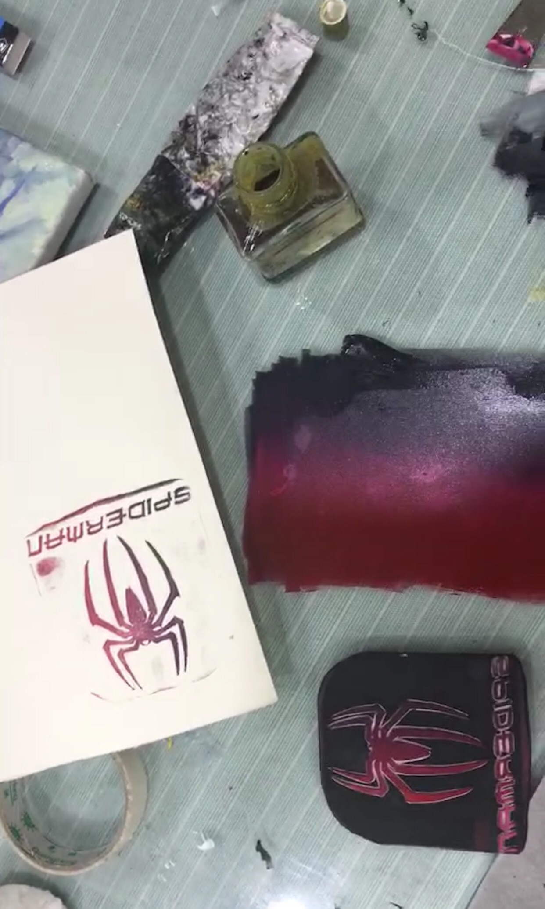

Photography


C'est la vie!
The camera is a teaching aid that teaches us how to look at the world without a camera.
The photos becomes memories, inspired by knowledge and freedom.Love life, love enthusiasm and love sincerity.
Carving

Spider Man Rubber Stamp
The fountain of life is rushing from the heart; the flower of life is open from the inside out.
Similarly, in beautiful carvings, it let us wander in heart .
This is the secret of ancient art.
Drawing

Watercolor
There are fine works and perfect works.
The fine works can be done with skill, and the perfect works are not available.
It will be necessary to be interested in the ambition, the heart and the paper, the ink and ink .
The talents are beautiful, but the nature is more beautiful than that.